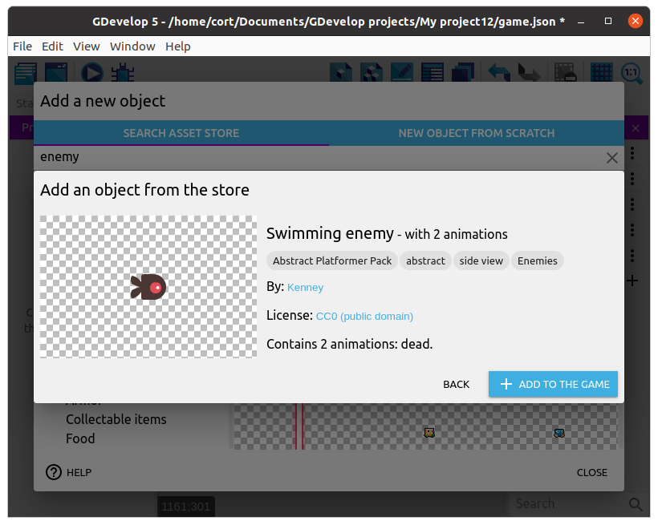
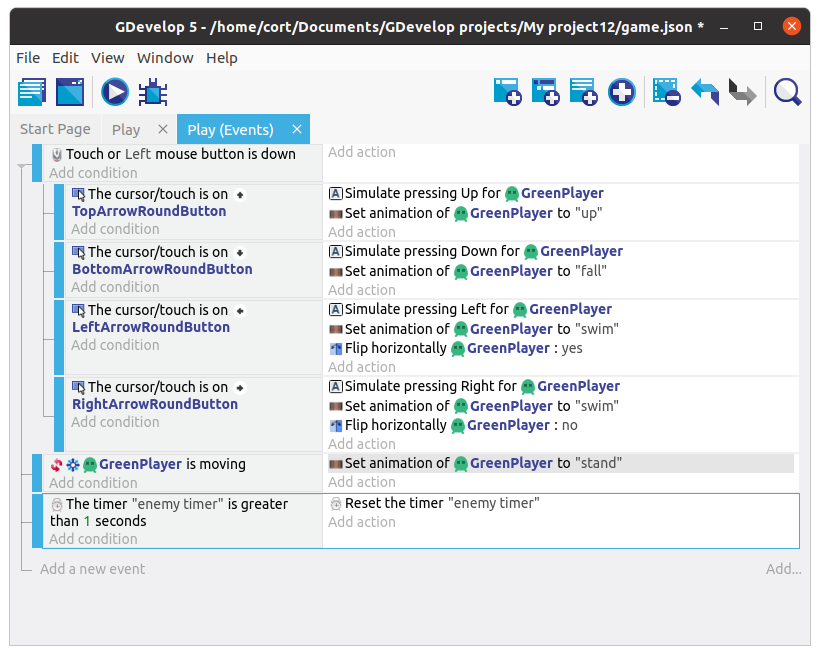
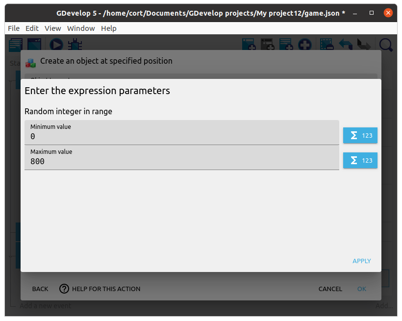
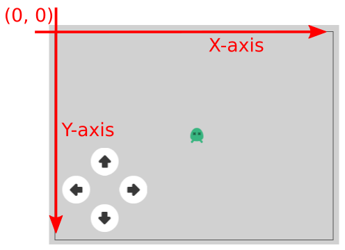
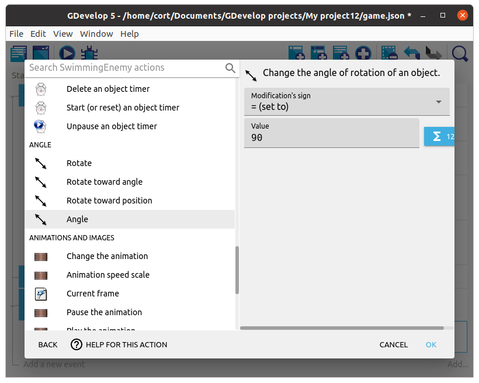

Enemies
Time to add the enemies! Add a new object, and select an suitable object to be your enemy. I'm using the Swimming enemy object...

As before, preview the animation and adjust the animation speed.
Create object action
Unlike the player and the arrow buttons, we can have many instances of the enemy, and we won't know exactly when or where they will appear. So instead of dragging them on to the scene, we'll use a Create object action to create the enemy instances.
Timer
For this game, we want to create a new enemy every 1 second. To do that, make use of a timer, and everytime the timer exceeds 1 second, we'll...
- Reset the timer (...back to zero).
- Add a new enemy at a random position.
- Rotate the enemy around (...so it faces the correct direction).
- Add a force to the enemy (...to make it move).
Start by adding a new event. Click on Add condition, select Other Conditions, then Value of a scene timer. Set the Time in seconds to 1, and the Timer's name to enemy timer (...nothing special about this name; you can use a different name if you want).

Next, add a sub-event under the timer event. Leave the condition blank, and add an action. Select the enemy, then the Create an object action.

Expressions
We want the enemy to appear at a random X position at the top of the screen.
To do that, do not key in a value for the X position, instead click on the expressions button next to it. 
Select the Random integer in range expression, and set the range 0 to 800. Click Apply

For the Y position, set it to 0. This will make our enemy start at the top of the screen.

Screen Dimensions and Coordinates
Previously, we set the random range to 0 to 800, this is because the default dimension of the game screen is 800 (width) by 600 (height). You can see (...and change) these by clicking the Project Manager button, selecting Game settings, then Properties.
We also set the Y position to 0 when we want the enemy to appear at the top. This is because unlike in math, for most computer graphics software, the Y axis is pointed downwards, and the origin is at the top left corner of the screen.

Rotate the enemy
To rotate the enemy, add a new action, click on the enemy, and select the Angle action. Set the Modification's sign to = (set to) and the Value to 90.

Move the enemy
To rotate the enemy, add a new action, click on the enemy, and select the Add a Force action.
Since we want the enemy to move downwards (positive Y direction), set the Speed on X axis to 0 and the Speed on Y axis to 200. Also set the force type to be Permanent. If we set it to Instant, we'll have to keep applying the force every frame or the enemy will stop moving after a short while.

Your events should now look like this...

Preview
Test out your game. You should see the enemy randomly appear and drop down from the top.